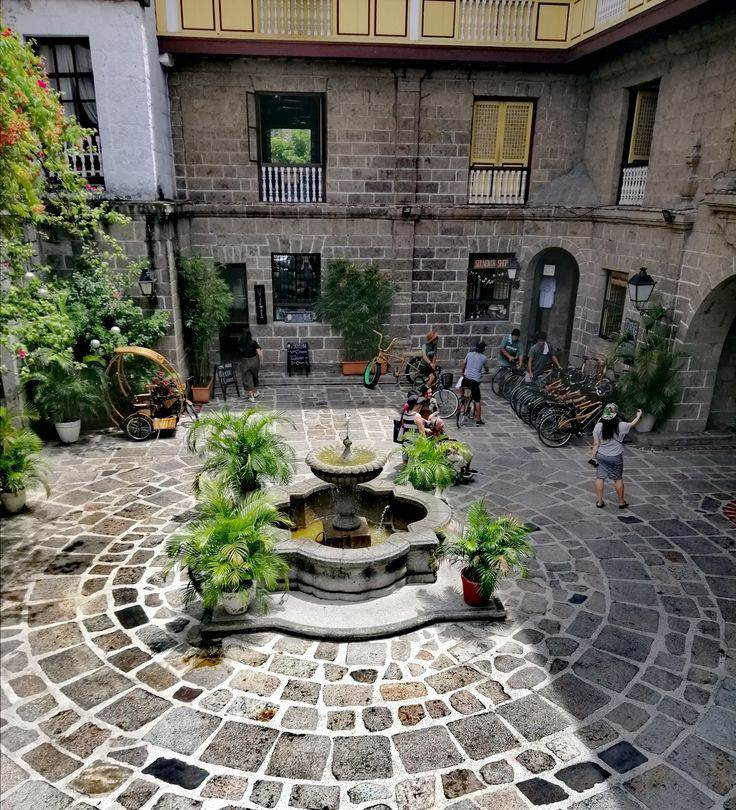

The Casa Manila (Manila W House) is a colonial lifestyle museum, which features the domestic life of the upper class in 19th Century Philippines. Built from 1981 to 1983, façade of the structure was inspired from a house that once stood at Jaboneros street in the Chinese district of Binondo in the 1850s.
Casa Manila Museum is a must-visit destination for those interested in learning about the Philippines' colonial past. Here are some of the things that make the museum special:
Historical Significance: Casa Manila Museum is a recreation of a Spanish colonial house that dates back to the 19th century. It provides visitors with a glimpse into the lifestyle and culture of the wealthy Filipino families during the Spanish colonial period.
Authenticity: The house was reconstructed in the 1980s using authentic materials from demolished Spanish colonial houses in the Philippines. The attention to detail in the reconstruction makes it feel as though visitors have stepped back in time.
Educational Opportunities: The museum offers educational opportunities for visitors to learn about the culture, architecture, and lifestyle of the Spanish colonial period in the Philippines. The museum offers guided tours, and there are information placards throughout the house that provide visitors with historical context.
Beautiful Architecture: The house features beautiful Spanish colonial architecture, with intricate wooden carvings, high ceilings, and a central courtyard. The architecture is a testament to the skill of Filipino craftsmen during the Spanish colonial period.
Location: Casa Manila Museum is located in the heart of Intramuros, making it a great place to explore the surrounding area and learn more about Manila's rich cultural heritage.
Overall, Casa Manila Museum is a special place that offers visitors a unique look into the Philippines' colonial past. Its authenticity, educational opportunities, and beautiful architecture make it a must-visit destination for anyone interested in the country's history and culture.